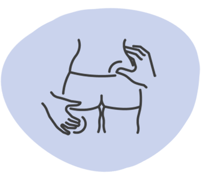
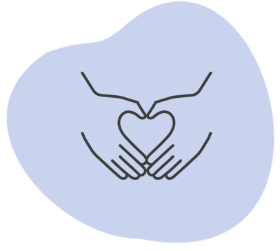
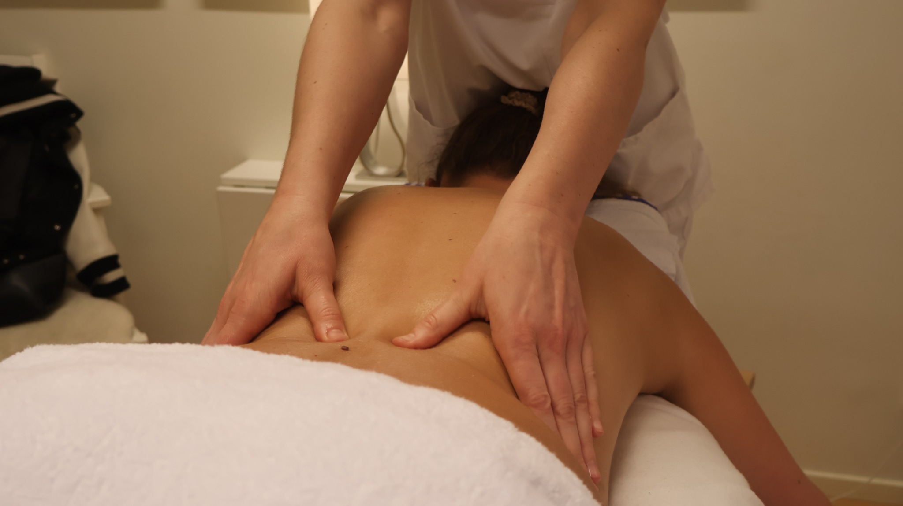

Helanova
Helanova
Tid för återhämtning
Läs om avslappningAvslappning
En mjukare massage för dig som vill varva ner och ge kroppen en paus.

Här finns utrymme för både återhämtning och behandling av muskelbesvär. Vi hjälper dig att hitta rätt.
Hitta din behandlingUpptäck våra behandlingar. Läs mer om det som passar dina behov.

Massage anpassad efter dina behov.
Läs merMjuk beröring och tid att varva ner.
Läs merOmtanke under din graviditet.
Läs mer
Lätta strykningar och mjuka tryck.
Läs mer
Fasciabehandling med vibrationer.
Läs mer
Kroppsbehandling med fokus på fascia.
Läs mer
Ett lyhört, kroppsorienterat arbetssätt.
Läs mer
Friskvårdsbidrag och presentkort.
Läs merSvårt att välja? Berätta vad du söker, så hjälper vi dig →
Vi kombinerar olika massagetekniker utifrån dina behov och önskemål.
Boka massage Alla behandlingar ↑
Vi erbjuder massage där vi kombinerar tekniker som klassisk svensk massage, deep tissue och fasciabehandling för att möta dina specifika behov. Vid ditt första besök, välj gärna alternativet ”nybesök” så börjar vi med en konsultation inklusive genomgång av anamnes och relevanta tester för att skapa en individuellt anpassad behandlingsplan som ger bästa möjliga resultat.
Läs mer om våra olika tekniker nedan.
En mjukare massage för dig som vill varva ner och ge kroppen en paus.
En behandling som anpassas efter dig och din kropp under graviditeten.
Lätta strykningar, mjuka tryck och andning i en lugn behandling.
Berätta vad du söker, så hjälper vi dig att hitta en behandling och terapeut som passar dig.